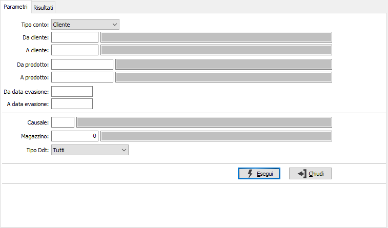
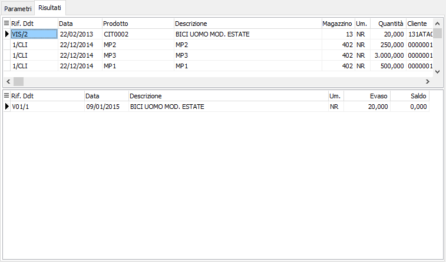

Analisi evasione Ddt
Il programma consente di visualizzare la situazione degli scarichi effettuati a fronte dell'emissione di Ddt non fatturabili; quindi di vedere, per ogni riga di Ddt non fatturabile, quali Ddt di scarico sono stati emessi.
Dalla pagina Risultati, tramite i pulsanti presenti nella Toolbar sarà possibile effettuare la stampa.
Il programma si articola su due finestre video. La prima, Parametri, consente la definizione dei parametri di analisi.

è possibile selezionare i documenti per cliente/fornitore, per prodotto, per data relativi al documento di scarico; si può inoltre filtrare la ricerca anche per causale e magazzino relativi al Ddt non fatturabile. Se è attivo il modulo del conto lavoro attivo, è presente il campo "Tipo Ddt" che consente di specificare quali Ddt si vogliono analizzare: tutti, solo quelli del conto lavoro attivo, solo Ddt di vendita escludendo quelli del conto lavoro attivo. Confermando tramite pressione del bottone Esegui, viene avviata la selezione e richiamata la finestra video Risultati.

La finestra video è articolata su due sezioni: la sezione superiore elenca le righe elaborate, relative ai Ddt non fatturabili, in base alla selezione effettuata. La sezione inferiore elenca invece le righe relative ai documenti che hanno evaso il rigo selezionato, che è quello contrassegnato dalla freccia posta a sinistra nella griglia di visualizzazione della sezione superiore.